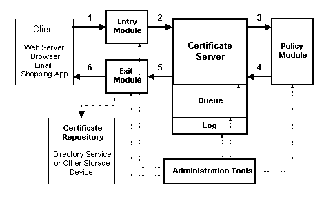

|
| ||
|
| ||
Microsoft Corporation
April 17, 1997
Contents
Introduction
Certificate Server Usage Scenarios
Microsoft Certificate Server
Benefits
Certificate Server Architecture
Glossary of Terms
Further Reading
Note: The information contained in this document represents the current view of Microsoft Corporation on the issues discussed as of the date of publication. Because Microsoft must respond to changing market conditions, this document should not be interpreted as a commitment on the part of Microsoft, and Microsoft cannot guarantee the accuracy of any information presented after the date of publication. Companies, names, and data used in examples herein are fictitious unless otherwise noted.This document is for informational purposes only. Microsoft makes no warranties, express or implied, in this document.
The Internet has opened up new ways for organizations to communicate, both internally and externally. Better communication between employees, vendors, and customers enables an organization to cut costs, bring products to market faster, and build stronger customer relationships. This improved communication requires--at times--transmitting sensitive information over the Internet and intranets. It thus becomes imperative to be able to conduct private, tamper-proof communication with known parties. To bring this about, organizations can build a secure infrastructure based on public-key cryptography by using digital certificates with technologies such as Secure Sockets Layer (SSL) and Secure Multipurpose Internet Mail Extensions (S/MIME).
With certificates, clients can be assured of a server's identity--the server proves its identity by presenting a certificate. A user who connects to a Web site that has a server certificate signed by a trusted authority can be confident that the server is actually operated by the company identified in the certificate.
Similarly, certificates enable servers to be confident of a client's identity. When a user connects to a Web site, the server can be assured of the user's identity if the server receives the client certificate.
Certificates form the basis for secure authenticated communication and access control on the Internet and the intranet. They provide:
High level of security. Certificate-based authentication reduces security risks because the user does not have to send user names and passwords over insecure networks. Certificates, which are both public and tamper-proof, can be sent over insecure networks. Certificate-based authentication is stronger than traditional methods of user authentication because digital certificates use public-key cryptography, which uses stronger encryption.
Single log on. Certificates make it easy for users to log on to multiple sites on the Internet or an intranet. Users do not have to remember multiple user names and passwords for each site. Users log on once, and their browser presents their certificate to sites as needed. Single log on is also easier to administer because there is no need to maintain user account databases on every server.
Microsoft Certificate Server can simplify the management of security and lower the cost of extending your corporate network. Here are just a few examples of how Certificate Server might be used:
An organization works closely with vendors and wants to securely and selectively share information with them. Each vendor needs controlled access to information on the corporate intranet.
An organization sells subscription services over the Internet to users who have visited its Web site.
Certificate Server enables an organization to easily manage the issuance, renewal and revocation of certificates without having to rely on external certificate authorities. With Certificate Server, an organization also has full control over the policies associated with the issuance, management, and revocation of certificates, as well as the format and contents of the certificates themselves. In addition, Certificate Server logs all transactions, which enables the administrator to track, audit, and manage certificate requests. The default policy automatically grants certificates to a trusted set of users based on a preset Windows NT user group of administrators, accounts, and servers. It can authenticate a user based on that user's Windows NT log on and enables an administrator to directly approve or deny a certificate request.
Administrators can issue certificates in standard formats (X509 versions 1 and 3) as well as add extensions to certificates as needed. Certificate Server:
Certificate Server leverages the reliability and scalability features of Microsoft Windows NT Server. It can be deployed on multiple servers in large organizations that need the flexibility of more than one certificate authority. Certificate Server is a multithreaded service on Windows NT and takes full advantage of Windows NT's multiprocessor capabilities. Certificate Server:
Certificate Server easily integrates with other products in the Microsoft BackOffice™ family such as Exchange Server and SQL Server™. Microsoft Exchange Server includes Key Manager, a tightly integrated certificate-issuing server, that provides Microsoft Exchange users with the ability to send signed and encrypted e-mail to other Microsoft Exchange users. In a future release of Exchange Server, administrators will have the option to use Microsoft Certificate Server in place of the Key Manager server.
Certificate Server works with Microsoft and non-Microsoft clients, browsers, and Web servers. You can choose to distribute and request certificates in many ways, including transport mechanisms that you can customize to your needs. The server can post certificates back to the user in e-mail, a light directory access protocol (LDAP)-based directory service, or any other custom mechanism. With Certificate Server, you can:
Administrators can easily install and manage Certificate Server using the point-and-click user-friendly graphical user interface of Microsoft Windows NT. Administrators don't have to learn a new administration tool--they can leverage their knowledge of Windows NT. Certificate Server administration tools:
Certificate Server is easy to install and configure. It can:
Certificate revocation is fully controllable, automatically or with administrator intervention. The system administrator can:
An administrator can fully customize how certificate requests are handled. The Entry module's open interfaces give administrators the flexibility to generate keys on the server or on the client.
Certificate Server offers many out-of-the-box solutions:
As with Certificate Server's entry modules, the exit modules are also fully customizable. You can:
Certificate Server is built on industry standards and open technologies. It includes support for:
Microsoft Certificate Server runs as a service on Windows NT and handles all certificate requests, issuances, and revocation lists (CRLs). It tracks the status of each certificate operation by using a transaction queue. When done with an operation, it writes the complete transaction in a log for later auditing by an administrator.
The following diagram shows the main Certificate Server components. The Certificate Server engine, queue, and log all run as a single Windows NT service. Entry, exit, and policy modules and the administration tools run in separate processes. The numbered arrows in Figure 1 show the stages of a certificate request. Each of the following numbered sections of text describes how each component works, following the progress of the certificate request.

Figure 1. Certificate Server components
A certificate request originates with a client application. This can be any application that supports digital certificates--a Web server or browser, an e-mail client, or a shopping front-end for an online store. Certificate Server offers a flexible entry point, called an entry module, that can be designed to take requests in many standard formats. Entry modules perform two main functions: they understand the protocol or transport mechanism used by the requesting application and they handle the communication with the Certificate Server when new certificate requests need to be submitted. If you have specific needs not met by one of the provided entry modules, you can write your own entry module using the open COM interface that Certificate Server provides. The open interfaces in the entry module give the administrator the flexibility to generate a key pair on the client or the server.
The entry module passes the certificate request to the Certificate Server engine. The engine enters the request in the queue and passes it on to the policy module. The policy module determines whether to grant the certificate and combines any extra information in the request with the certificate. The policy module, like the entry module, is fully customizable.
When making the grant determination, the policy module can look at external databases, checking information in the request against other sources for verification, such as a directory service, legacy database, credit information from an outside credit authority, and so forth. The policy module can also send alerts to the appropriate administrators if manual (offline) approval of the request is required.
The policy module then packages the information in the request as specified by the administrator. The policy module can be instructed to insert any certificate extensions that might be required by a client application. For example, the information could include a job title and a signing limit--used by an online purchasing form to determine whether the user can sign for the amount requested. In this way, certificates enable authentication requirements to be easily distributed.
When the policy module passes the granted certificate request back to the Certificate Server engine, the engine updates the queue, encodes and digitally signs the certificate, and logs the completed transaction. The log tracks all requests and whether they were granted or denied. It also stores all published certificates and certificate revocation lists for auditing purposes.
Certificate Server passes the certificate to the exit module, which packages it in the appropriate transport mechanism or protocol. It can send it in e-mail, over the network, or post the certificate in a directory service such as the Active Directory.
Like the entry module, the exit module is fully customizable. Moreover, a single server can have multiple exit modules so that it can both send the certificate to the client application and store it in a separate database or certificate repository. Others can use the certificate repository to look up a user's certificate information for verification.
The exit module is also responsible for delivering CRLs. Because the exit module is already handling certificate repository updates, CRLs are automatically delivered to wherever certificates are stored.
Certificate Server provides a group of administration tools for configuring, monitoring, and controlling the operations of the server. In addition to modifying policies and adding new entry and exit modules, administrators can also view the Certificate Server queue directly (with appropriate access permissions). An administrator can look at the queue and deny a certificate request (or grant one), and can also force the immediate delivery of a high-priority CRL.
| CA | Certificate Authority. An entity that issues, manages, and revokes certificates. |
| CRL | Certificate Revocation List. A document maintained and published by a CA that lists certificates that have been revoked by the CA. |
| client certificate | Refers to the use of a certificate for client authentication. For example, a Web browser can be considered the client of a Web server. When a Web browser attempts to access a secured Web server, it would send its certificate to the server for verification of the client's identity. |
| CryptoAPI | Microsoft Cryptographic API. An application programming interface providing services for authentication, encoding, and encryption in Win32®-based applications. |
| DLL | Dynamic-Link Library. A code module that is not itself an executable program, but can be loaded and shared by one or more executable programs. |
| HTML | Hypertext Markup Language. A tag-based presentation language used to create Web pages. |
| HTTP | Hypertext Transfer Protocol. A communications protocol used to transfer information over TCP/IP networks such as corporate intranets and the Internet. |
| Internet | A global network of computers that communicate using a set of common protocols including HTTP and TCP/IP. |
| intranet | Refers to any TCP/IP network that is not connected to the Internet but uses Internet communications standards and tools to provide information to users on a private network. |
| LDAP | Lightweight Directory Access Protocol. |
| ODBC | Open Database Connectivity. A database connectivity standard that enables applications to communicate with database back-ends without writing to a specific database management system (DBMS). |
| PKCS | Public-Key Cryptography Standards. |
| RPC | Remote Procedure Call. A widely used standard defined by the Open Software Foundation (OSF) for distributed computing. The RPC transport enables one process to make calls to functions that are part of another process. The other process can be on the same computer or on a different computer on the network. |
| SSL | Secure Sockets Layer. A standard protocol for secure network communication using public-key technology. |
| server certificate | Refers to the use of a certificate for server authentication. For example, a Web server would send its server certificate to a Web browser to enable the Web browser to verify the server's identity. |
| TCP/IP | Transmission Control Protocol/Internet Protocol. A standard networking protocol used by the Internet and by intranets. |
| X.509 | Standard certificate format supported by Certificate Server. |
The following are additional documents that will help you understand certificates, authentication, and the associated security issues:
Did you find this material useful? Gripes? Compliments? Suggestions for other articles? Write us!
© 1999 Microsoft Corporation. All rights reserved. Terms of use.